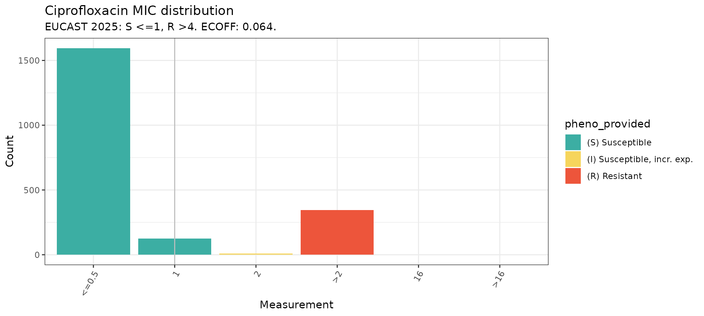
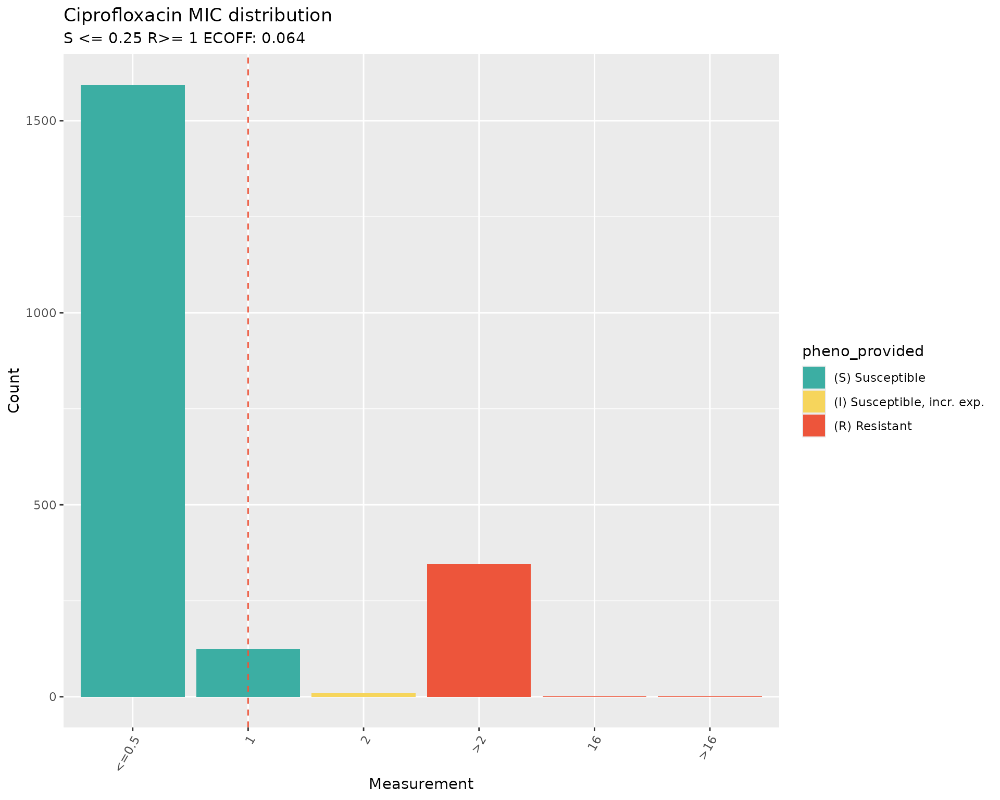
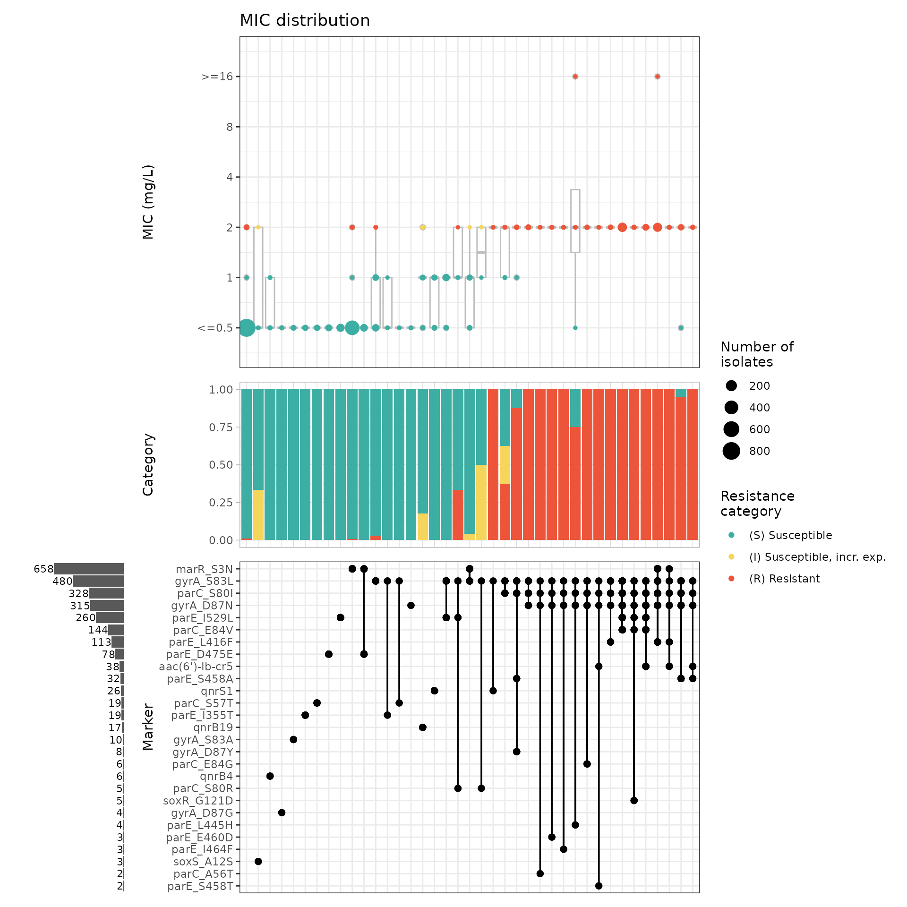
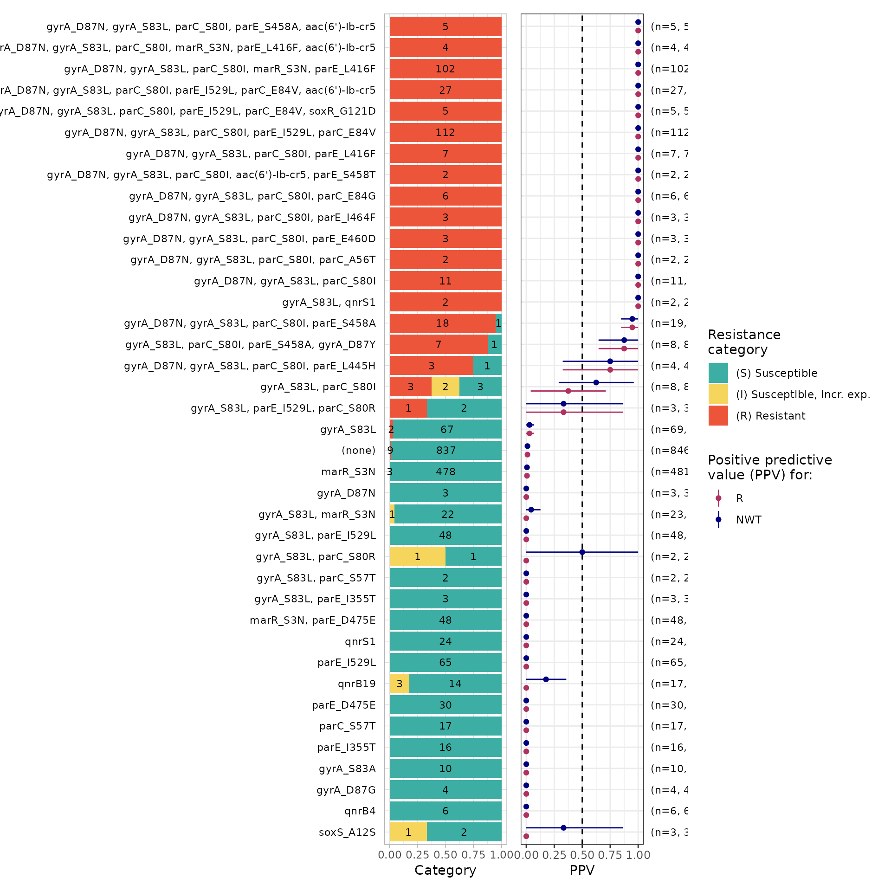
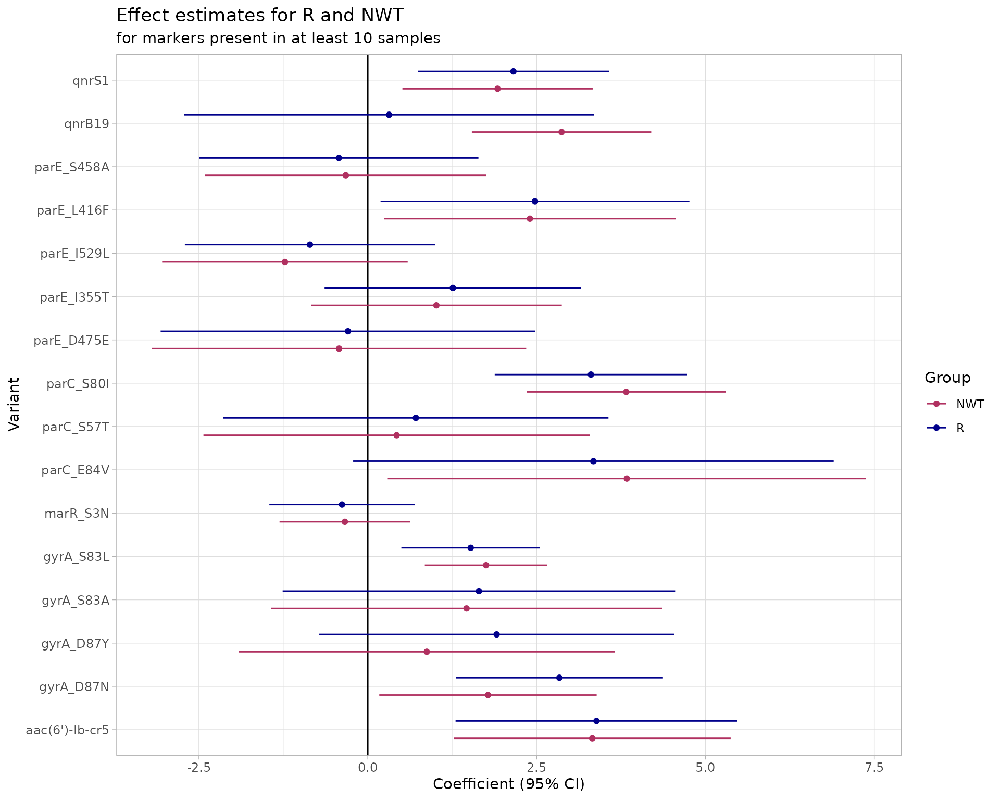
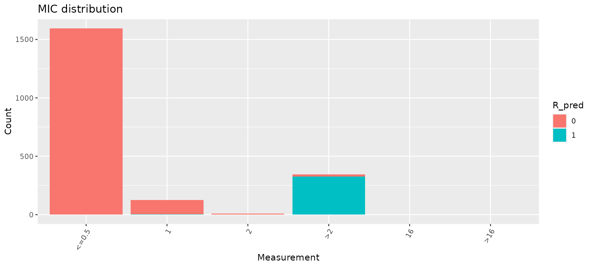
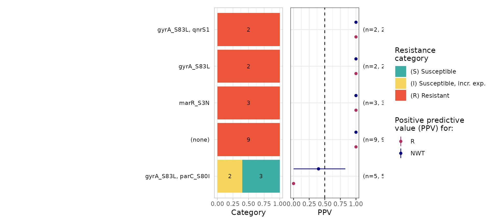

Introduction
AMRgen is a comprehensive R package designed to
integrate antimicrobial resistance genotype and phenotype data. It
provides tools to import AMR genotype data, AST phenotype data, and
conduct genotype-phenotype analyses to explore the impact of genotypic
markers on phenotype, including phenotype-genotype concordance.
The concordance() function in AMRgen compares genotypes
(presence of resistance markers) to observed phenotypes (resistant vs
susceptible) using a binary matrix obtained with
get_binary_matrix(). A genotypic prediction variable is
defined on the basis of presence of genetic resistance markers, either
all markers in the input table or those defined by an input inclusion
list or exclusion list (specific marker(s), a minimum number of
markers). The user may also filter the markers to be included in the
genotypic prediction based on thresholds for solo Positive Predictive
Value (PPV, see solo_ppv() function) or logistic regression
p-values (see amr_logistic() function.
This genotypic prediction (the “test”) is then compared to the
observed phenotypes (the “truth” or “gold standard”) using standard
classification metrics calculated with the yardstick package (https://yardstick.tidymodels.org/reference/index.html).
These are Sensitivity, Specificity, PPV, Negative Predictive Value
(NPV), Accuracy, Kappa, and F-measure. Error rates (major error - ME,
and very major error - VME) are calculated as per ISO 20776-2 (see FDA
definitions). The concordance() function supports
evaluating both R and NWT outcomes in a single call, with flexible
prediction rules and marker inclusion options.
This vignette walks through a workflow to analyse phenotype-genotype concordance using example datasets taken from “A one-year genomic investigation of Escherichia coli epidemiology and nosocomial spread at a large US healthcare network” by Mills et al (2022). The antimicrobial susceptibility test results (MIC values and SIR interpretation) were obtained from the EBI AMR portal (https://www.ebi.ac.uk/amr/), and the AMRFinderPlus results from the All the Bacteria project (https://allthebacteria.org/).
Citation: Mills, E.G., Martin, M.J., Luo, T.L. et al. A one-year genomic investigation of Escherichia coli epidemiology and nosocomial spread at a large US healthcare network. Genome Med 14, 147 (2022). https://doi.org/10.1186/s13073-022-01150-7
Start by loading the AMRgen package:
# Load AMRgen
library(AMRgen)
# Also load the dplyr package to use the filter function in step 7
# https://dplyr.tidyverse.org/reference/filter.html
library(dplyr)
#>
#> Attaching package: 'dplyr'
#> The following objects are masked from 'package:stats':
#>
#> filter, lag
#> The following objects are masked from 'package:base':
#>
#> intersect, setdiff, setequal, union1. Phenotype table
The antimicrobial susceptibility test (AST) data for the 2075 isolates in this study were retrieved from the EBI AMR Portal FTP site, following these steps:
Downloaded all E. coli phenotype data with the
download_ebi()function from AMRgen, passing optionsspecies="Escherichia coli",release = "2025-12", andreformat = TRUE. Options to reinterpret data based on CLSI/EUCAST breakpoints or ECOFFs were not applied.Downloaded the table with accessions associated with this publication (bioproject PRJNA809394) from the SRA (https://www.ncbi.nlm.nih.gov/Traces/study/?acc=SRP401320&o=acc_s%3Aa). Note: some manual curation was needed as this file contains accessions for 2076 samples.
Programmatically selected the AST data for the 2075 E. coli by the “id” column using the “BioSample” column in the accessions table.
The resulting phenotype table was imported to the AMRgen package and
called pheno_eco_2075.
# Check the format of the phenotype table pre-loaded in the AMRgen package
data(pheno_eco_2075)
head(pheno_eco_2075)
#> # A tibble: 6 × 36
#> id drug mic pheno_provided guideline method platform source spp_pheno
#> <chr> <ab> <mic> <sir> <chr> <chr> <chr> <lgl> <mo>
#> 1 SAMN… AMK <=8 S CLSI broth … BD Phoe… NA B_ESCHR_COLI
#> 2 SAMN… GEN <=2 S CLSI broth … BD Phoe… NA B_ESCHR_COLI
#> 3 SAMN… TOB <=2 S CLSI broth … BD Phoe… NA B_ESCHR_COLI
#> 4 SAMN… AMP <=4 S CLSI broth … BD Phoe… NA B_ESCHR_COLI
#> 5 SAMN… AMC 8 S CLSI broth … BD Phoe… NA B_ESCHR_COLI
#> 6 SAMN… TZP <=2 S CLSI broth … BD Phoe… NA B_ESCHR_COLI
#> # ℹ 27 more variables: SRA_accession <chr>, assembly_ID <chr>,
#> # collection_year <dbl>, ISO_country_code <chr>, host <chr>, host_age <lgl>,
#> # host_sex <lgl>, isolate <dbl>, isolation_source <chr>,
#> # isolation_source_category <chr>, isolation_latitude <dbl>,
#> # isolation_longitude <dbl>, genus <chr>, organism <chr>,
#> # Updated_phenotype_CLSI <chr>, Updated_phenotype_EUCAST <chr>,
#> # used_ECOFF <chr>, database <chr>, measurement <chr>, …The phenotype table has one row for each assay measurement, i.e. one
per strain/drug combination. The essential columns for a phenotype table
to work with AMRgen functions are:
id: character string giving the sample name, used to link to sample names in the genotype filespp_pheno: species in the form of an AMR packagemoclass, in this vignette “B_ESCHR_COLI”drug: antibiotic name in the form of an AMR packageabclassa phenotype column: S/I/R phenotype calls in the form of an AMR package
sirclass. In this example, SIR phenotype calls are as provided in the EBI AMR portal (pheno_provided) as we did not re-interpret data based on CLSI/EUCAST breakpoints during download.
This vignette also uses raw MIC data for the analyses. The corresponding column is:
-
mic: MIC measurements in the form of an AMR packagemicclass.
2. Genotype table
The AMRFinderPlus results for the 2075 isolates in this study were retrieved from the AllTheBacteria project, following these steps:
Downloaded a compressed TSV file containing the aggregated results of running AMRFinderPlus on all samples in the AllTheBacteria dataset from https://osf.io/ck7st (large file)
Programmatically selected the results for the 2075 E. coli samples by the “Name” column using the “BioSample” column in the accessions table downloaded from the SRA (as for the phenotype table).
# Load AMRFinderPlus data to create an object with the key columns needed to work with the AMRgen package
data(geno_eco_2075)
geno_eco_2075 <- import_amrfp(geno_eco_2075, "Name")
# Check the format of the processed genotype table
head(geno_eco_2075)
#> # A tibble: 6 × 33
#> id marker gene mutation drug drug_class `variation type` node
#> <chr> <chr> <chr> <chr> <ab> <chr> <chr> <chr>
#> 1 SAMN26304318 pmrB_Y358N pmrB Tyr358A… COL Polymyxins Protein variant… pmrB
#> 2 SAMN26304318 blaEC blaEC NA NA Beta-lacta… Gene presence d… blaEC
#> 3 SAMN26304318 mdtM mdtM NA NA Efflux Gene presence d… mdtM
#> 4 SAMN26304318 glpT_E448K glpT Glu448L… FOS Phosphonics Protein variant… glpT
#> 5 SAMN26304318 acrF acrF NA NA Efflux Gene presence d… acrF
#> 6 SAMN26304319 blaEC blaEC NA NA Beta-lacta… Gene presence d… blaEC
#> # ℹ 25 more variables: marker.label <chr>, `Protein identifier` <lgl>,
#> # `Contig id` <chr>, Start <dbl>, Stop <dbl>, Strand <chr>,
#> # `Gene symbol` <chr>, `Sequence name` <chr>, Scope <chr>,
#> # `Element type` <chr>, `Element subtype` <chr>, Class <chr>, Subclass <chr>,
#> # Method <chr>, `Target length` <dbl>, `Reference sequence length` <dbl>,
#> # `% Coverage of reference sequence` <dbl>,
#> # `% Identity to reference sequence` <dbl>, `Alignment length` <dbl>, …The genotype table has one row for each genetic marker detected in an
input genome, i.e. one per strain/marker combination. The essential
columns for a genotype table to work with AMRgen functions
are:
Name: character string giving the sample name, used to link to sample names in the phenotype file.marker: character string giving the name of the genetic marker detected.drug_class: character string giving the antibiotic class associated with this marker.
NOTE: In this example, at least one AMR marker is present in all 2075 genomes. In contrast, no markers were reported for five genomes in the publication (see Supplementary Table 3).
3. Combine genotype and phenotype data for Ciprofloxacin
The phenotype table includes data for 18 antibiotics from 11 different classes, but we need to analyse concordance one drug at a time.
The function get_binary_matrix() is used to extract
phenotype data for a specified drug (in this example Ciprofloxacin), and
genotype data for markers associated with a specified drug class by
AMRFinderPlus (in this example Quinolones). It returns a single
dataframe with one row per strain, for the subset of strains that appear
in both the genotype and phenotype input tables.
# Get matrix combining phenotype data for Ciprofloxacin, binary calls for R/NWT pheno,
# and genotype presence/absence data for all markers associated with Quinolone
eco_cip_matrix <- get_binary_matrix(
geno_eco_2075,
pheno_eco_2075,
pheno_drug = "Ciprofloxacin",
geno_class = "Quinolones",
sir_col = "pheno_provided",
keep_assay_values = TRUE,
keep_assay_values_from = "mic"
)
#> Defining NWT in binary matrix as I/R vs S, as no ECOFF column defined
# Check the format of the binary matrix
head(eco_cip_matrix)
#> # A tibble: 6 × 36
#> id pheno mic R NWT gyrA_D87N gyrA_S83L parC_S80I parE_S458A
#> <chr> <sir> <mic> <dbl> <dbl> <dbl> <dbl> <dbl> <dbl>
#> 1 SAMN26304318 S <=0.5 0 0 0 0 0 0
#> 2 SAMN26304319 R >2.0 1 1 1 1 1 1
#> 3 SAMN26304320 S <=0.5 0 0 0 0 0 0
#> 4 SAMN26304321 S <=0.5 0 0 0 0 0 0
#> 5 SAMN26304322 S <=0.5 0 0 0 0 0 0
#> 6 SAMN26304323 S <=0.5 0 0 0 0 0 0
#> # ℹ 27 more variables: marR_S3N <dbl>, qnrS1 <dbl>, parE_I529L <dbl>,
#> # parC_E84V <dbl>, qnrB19 <dbl>, parE_L416F <dbl>, parC_S80R <dbl>,
#> # `aac(6')-Ib-cr5` <dbl>, parE_S458T <dbl>, parE_D475E <dbl>,
#> # parC_S57T <dbl>, parE_I355T <dbl>, gyrA_S83A <dbl>, parC_E84G <dbl>,
#> # qnrB2 <dbl>, marR_R77C <dbl>, qnrB6 <dbl>, gyrA_D87Y <dbl>,
#> # parE_L445H <dbl>, gyrA_D87G <dbl>, qnrB4 <dbl>, soxS_A12S <dbl>,
#> # parE_I464F <dbl>, parE_E460D <dbl>, qnrB <dbl>, soxR_G121D <dbl>, …Each row in the binary matrix indicates, for one strain, both the phenotypes (with SIR column, mic values, and boolean 1/0 coding of R and NWT status) and the genotypes (one column per marker, with boolean 1/0 coding of marker presence/absence).
The ‘NWT’ variable can be taken either from a precomputed ECOFF-based
call of WT=wildtype/NWT=nonwildtype (if passing the option
ecoff_col), or computed from the S/I/R phenotype as NWT=R/I
and WT=S. In this example, NWT was defined as R/I vs S. No ECOFF column
was defined because of the nature of the AST data: the minimum MIC
values of <=0.5 in the BD Phoenix AST data are above the ECOFF of
0.064 and cannot be interpreted against ECOFF. We can inspect the
distribution of the Ciprofloxacin phenotype data to better understand
this.
4. Plot Ciprofloxacin phenotype data distribution
The function assay_by_var() can be used to plot the
distribution of MIC values coloured by a variable. In this case, the
S/I/R values were coloured by the column “pheno_provided”, which were
interpreted by the authors with the breakpoints from CLSI 2018. We can
also compare them to the updated breakpoints from CLSI 2025.
# CLSI 2018 guidelines (as in the publication from Mills et al).
# The breakpoints are provided manually.
assay_by_var(
pheno_table = pheno_eco_2075,
pheno_drug = "Ciprofloxacin",
measure = "mic",
colour_by = "pheno_provided",
species = "Escherichia coli",
bp_S = 1,
bp_R = 4
)
# CLSI 2025 guidelines
# The breakpoints are provided by passing the option "guideline"
assay_by_var(
pheno_table = pheno_eco_2075,
pheno_drug = "Ciprofloxacin",
measure = "mic",
colour_by = "pheno_provided",
species = "Escherichia coli",
guideline = "CLSI 2025"
)
#> MIC breakpoints determined using AMR package: S <= 0.25 and R > 1
The plots of the distribution of MIC values with breakpoints for Ciprofloxacin from the 2018 CLSI guidelines (S<=1 and R>=4) vs 2025 CLSI guidelines (S<=0.25 and R>=1) confirm that the SIR interpretation was as per the 2018 breakpoints, and that the interpretation would have been different if the AST data had been re-interpreted during download by passing the optioninterpret_clsi=TRUE to the download_ebi()
function.
The plots also show that the ECOFF value of 0.064 is below the minimum MIC values in the distribution.
5. Calculate concordance between phenotype and genotype
Start with a first concordance calculation including all the AMR markers in the binary matrix.
concordance_cip <- concordance(eco_cip_matrix)
concordance_cip
#> AMR Genotype-Phenotype Concordance
#> Prediction rule: any
#>
#> --- Outcome: R ---
#> Samples: 2075 | Markers: 31
#> Markers used: gyrA_D87N, gyrA_S83L, parC_S80I, parE_S458A, marR_S3N, qnrS1, parE_I529L, parC_E84V, qnrB19, parE_L416F, parC_S80R, aac(6')-Ib-cr5, parE_S458T, parE_D475E, parC_S57T, parE_I355T, gyrA_S83A, parC_E84G, qnrB2, marR_R77C, qnrB6, gyrA_D87Y, parE_L445H, gyrA_D87G, qnrB4, soxS_A12S, parE_I464F, parE_E460D, qnrB, soxR_G121D, parC_A56T
#>
#> Confusion Matrix:
#> Truth
#> Prediction 1 0
#> 1 338 891
#> 0 9 837
#>
#> Metrics:
#> Sensitivity : 0.9741
#> Specificity : 0.4844
#> PPV : 0.2750
#> NPV : 0.9894
#> Accuracy : 0.5663
#> Kappa : 0.2274
#> F-measure : 0.4289
#> VME : 0.0259
#> ME : 0.5156
#>
#> --- Outcome: NWT ---
#> Samples: 2075 | Markers: 31
#> Markers used: gyrA_D87N, gyrA_S83L, parC_S80I, parE_S458A, marR_S3N, qnrS1, parE_I529L, parC_E84V, qnrB19, parE_L416F, parC_S80R, aac(6')-Ib-cr5, parE_S458T, parE_D475E, parC_S57T, parE_I355T, gyrA_S83A, parC_E84G, qnrB2, marR_R77C, qnrB6, gyrA_D87Y, parE_L445H, gyrA_D87G, qnrB4, soxS_A12S, parE_I464F, parE_E460D, qnrB, soxR_G121D, parC_A56T
#>
#> Confusion Matrix:
#> Truth
#> Prediction 1 0
#> 1 347 882
#> 0 9 837
#>
#> Metrics:
#> Sensitivity : 0.9747
#> Specificity : 0.4869
#> PPV : 0.2823
#> NPV : 0.9894
#> Accuracy : 0.5706
#> Kappa : 0.2341
#> F-measure : 0.4379
#> VME : 0.0253
#> ME : 0.5131The output shows that 31 markers were identified linked to Ciprofloxacin resistance in this dataset.
The 2x2 confusion matrix shows the following values:
338 - no. of true positives (TP), resistant isolates predicted to be resistant by the presence of AMR markers
891 - no. of false positives (FP), susceptible isolates predicted to be resistant by the presence of AMR markers
837 - no. of true negatives (TN), susceptible isolates predicted to be susceptible by the absence of resistance markers
9 - no. of false negatives (FN), resistant isolates predicted to be susceptible by the absence of resistance markers
The sensitivity value (or true positive rate, i.e. the proportion of resistant isolates predicted to be resistant by the presence of AMR markers) is high (>0.95), but the specificity (or true negative rate, i.e. the proportion of susceptible isolates predicted to be susceptible by the absence of resistance markers) is very low (<0.5). The high sensitivity is especially important as predicting a resistant strain as susceptible is more consequential to treatment than finding resistance genes in phenotypically susceptible isolates. This is also reflected in the low Very Major Error (VME) vs the high Major Error (ME).
The PPV, i.e. the proportion of all positive results (true plus false) that are TP, is low. This is due to the higher number of FP (891) than of TP (331), i.e. many Cip-susceptible isolates carry resistance markers. Conversely, the NPV, i.e. the proportion of all negative results (true plus false) that are TN, is high. This is because the number of TN (837) is much higher than the number of false negatives (9).
The concordance stats for outcome R (R vs S/I) are very similar than for outcome NWT (R/I vs S). This can be explained by the small number of isolates interpreted as “I” in this dataset (n=9).
The low specificity value (caused by the 891 Cip-susceptible isolates
that carry resistance markers) is not surprising as Ciprofloxacin
resistance usually results from the accumulation of mutations, with
isolates carrying only one mutation often remaining susceptible. This
can be easily visualised with the amr_upset() function in
AMRgen.
6. Compare the presence of markers with susceptibility testing data with an upset plot
The function amr_upset() takes the binary matrix table
eco_cip_matrix, and explores the distribution of MIC assay
values for all observed combinations of markers (solo or multiple
markers). The resulting upset plot shows the distribution of assay
values and S/I/R calls for each observed marker combination, and returns
a summary of these distributions (including sample size, median and
interquartile range, number and proportion classified as R).
# Generate an upset plot comparing ciprofloxacin MIC data with quinolone marker combinations,
eco_cip_upset <- amr_upset(
eco_cip_matrix,
assay = "mic",
order = "value"
)
#> Ordering markers by frequency
#> Scale for y is already present.
#> Adding another scale for y, which will replace the existing scale.
#> Scale for y is already present.
#> Adding another scale for y, which will replace the existing scale.
The upset plot shows that the combination of mutations in the Quinolone Resistance Determining Region (QRDR) of the E. coli DNA topoisomerase GyrA (gyrA_S83L) and DNA gyrase ParC (parC_S80I), alone or with other mutations, raises the MIC values above the susceptible range, i.e. the combination of this mutations is common in non-susceptpible isolates (I/R).To identify the combinations of AMR markers that are associated with
resistance, we can use the amr_ppv() function of the
AMRgen package
7. Identify markers or combination of markers associated with resistance
The amr_ppv() function calculates the possible
combinations of markers, and returns the positive predictive value (PPV)
for each combination (with 95% CI) and the basic plot elements
(including PPV).
# Generate a summary plot of PPV for each solo and combination of markers observed in the mic assay data and order by decreasing ppv value
eco_cip_ppv <- amr_ppv(eco_cip_matrix,
assay = "mic",
order = "ppv"
)
#> Ordering markers by frequency
# View the column headers of the ppv stats
head(eco_cip_ppv$summary)
#> # A tibble: 6 × 21
#> marker_list marker_count n combination_id R.n R.ppv R.ci_lower
#> <chr> <dbl> <int> <fct> <dbl> <dbl> <dbl>
#> 1 "" 0 846 0_0_0_0_0_0_0_0_0_0_0_… 9 0.0106 0.00373
#> 2 "qnrB" 1 1 0_0_0_0_0_0_0_0_0_0_0_… 0 0 0
#> 3 "soxS_A12S" 1 3 0_0_0_0_0_0_0_0_0_0_0_… 0 0 0
#> 4 "qnrB4" 1 6 0_0_0_0_0_0_0_0_0_0_0_… 0 0 0
#> 5 "gyrA_D87G" 1 4 0_0_0_0_0_0_0_0_0_0_0_… 0 0 0
#> 6 "gyrA_D87Y" 1 1 0_0_0_0_0_0_0_0_0_0_0_… 0 0 0
#> # ℹ 14 more variables: R.ci_upper <dbl>, R.denom <int>, NWT.n <dbl>,
#> # NWT.ppv <dbl>, NWT.ci_lower <dbl>, NWT.ci_upper <dbl>, NWT.denom <int>,
#> # median_excludeRangeValues <dbl>, q25_excludeRangeValues <dbl>,
#> # q75_excludeRangeValues <dbl>, n_excludeRangeValues <int>,
#> # median_ignoreRanges <dbl>, q25_ignoreRanges <dbl>, q75_ignoreRanges <dbl>
# Select only combinations with a R ppv value of at least 0.5
ppv_05 <- eco_cip_ppv$summary %>%
filter(R.ppv >= 0.5)
# View the combinations of markers with a ppv value above 0.5
ppv_05
#> # A tibble: 27 × 21
#> marker_list marker_count n combination_id R.n R.ppv R.ci_lower
#> <chr> <dbl> <int> <fct> <dbl> <dbl> <dbl>
#> 1 aac(6')-Ib-cr5, par… 3 1 0_0_0_0_0_0_0… 1 1 1
#> 2 gyrA_S83L, qnrS1 2 2 0_1_0_0_0_1_0… 2 1 1
#> 3 gyrA_S83L, parC_S80… 3 1 0_1_1_0_0_0_0… 1 1 1
#> 4 gyrA_S83L, parC_S80… 3 1 0_1_1_0_0_0_0… 1 1 1
#> 5 gyrA_S83L, parC_S80… 4 8 0_1_1_1_0_0_0… 7 0.875 0.646
#> 6 gyrA_D87N, gyrA_S83… 3 11 1_1_1_0_0_0_0… 11 1 1
#> 7 gyrA_D87N, gyrA_S83… 4 2 1_1_1_0_0_0_0… 2 1 1
#> 8 gyrA_D87N, gyrA_S83… 4 3 1_1_1_0_0_0_0… 3 1 1
#> 9 gyrA_D87N, gyrA_S83… 4 3 1_1_1_0_0_0_0… 3 1 1
#> 10 gyrA_D87N, gyrA_S83… 4 4 1_1_1_0_0_0_0… 3 0.75 0.326
#> # ℹ 17 more rows
#> # ℹ 14 more variables: R.ci_upper <dbl>, R.denom <int>, NWT.n <dbl>,
#> # NWT.ppv <dbl>, NWT.ci_lower <dbl>, NWT.ci_upper <dbl>, NWT.denom <int>,
#> # median_excludeRangeValues <dbl>, q25_excludeRangeValues <dbl>,
#> # q75_excludeRangeValues <dbl>, n_excludeRangeValues <int>,
#> # median_ignoreRanges <dbl>, q25_ignoreRanges <dbl>, q75_ignoreRanges <dbl>The analysis confirms that solo AMR markers have low PPV (<0.5) for Ciprofloxacin. In contrast, 27 combinations of between 2 and 6 markers have PPV >= 0.5. The distribution of the number of markers in these combinations is as follows: No. of markers No.of combinations 2 1 3 4 4 9 5 6 6 7
Importantly, out of the 27 combinations, 25 include mutations gyrA_S83L and parC_S80I.
We can use all this information to refine our concordance analysis.
Note: the amr_ppv() function applies by default a
min_set_size threshold of 2, meaning that only solo markers
or marker combinations with at least 2 occurrences in the dataset are
included in the plots. Nevertheless solo markers or marker combinations
that occur only once in the dataset are included in the stats table. In
this example, there are 10 marker combinations represented by only 1
isolate in the dataset.
8. Analyse concordance refining the definition of the genotypic prediction variable
We can refine the concordance analysis by setting requirements for the presence of gyrA_S83L and parC_S80I, or for a minimum number of markers. We will try this only for outcome R, as we have seen before that outcome NWT produces very similar concordance stats.
# Filter the genotypic prediction by the presence of specific mutations
concordance_cip_markers <- concordance(eco_cip_matrix,
truth = "R",
markers = c("gyrA_S83L", "parC_S80I")
)
concordance_cip_markers
#> AMR Genotype-Phenotype Concordance
#> Prediction rule: any
#>
#> --- Outcome: R ---
#> Samples: 2075 | Markers: 2
#> Markers used: gyrA_S83L, parC_S80I
#>
#> Confusion Matrix:
#> Truth
#> Prediction 1 0
#> 1 334 160
#> 0 13 1568
#>
#> Metrics:
#> Sensitivity : 0.9625
#> Specificity : 0.9074
#> PPV : 0.6761
#> NPV : 0.9918
#> Accuracy : 0.9166
#> Kappa : 0.7440
#> F-measure : 0.7943
#> VME : 0.0375
#> ME : 0.0926
# Filter the genotypic prediction by the presence of a minimum number of markers
concordance_cip_min <- concordance(eco_cip_matrix,
truth = "R",
prediction_rule = 2
)
concordance_cip_min
#> AMR Genotype-Phenotype Concordance
#> Prediction rule: 2
#>
#> --- Outcome: R ---
#> Samples: 2075 | Markers: 31
#> Markers used: gyrA_D87N, gyrA_S83L, parC_S80I, parE_S458A, marR_S3N, qnrS1, parE_I529L, parC_E84V, qnrB19, parE_L416F, parC_S80R, aac(6')-Ib-cr5, parE_S458T, parE_D475E, parC_S57T, parE_I355T, gyrA_S83A, parC_E84G, qnrB2, marR_R77C, qnrB6, gyrA_D87Y, parE_L445H, gyrA_D87G, qnrB4, soxS_A12S, parE_I464F, parE_E460D, qnrB, soxR_G121D, parC_A56T
#>
#> Confusion Matrix:
#> Truth
#> Prediction 1 0
#> 1 333 149
#> 0 14 1579
#>
#> Metrics:
#> Sensitivity : 0.9597
#> Specificity : 0.9138
#> PPV : 0.6909
#> NPV : 0.9912
#> Accuracy : 0.9214
#> Kappa : 0.7559
#> F-measure : 0.8034
#> VME : 0.0403
#> ME : 0.0862The specificity, PPV, and ME values have substantially improved for both refinement strategies. The results are fairly similar because 25/27 combinations included the two mutations specified.
9. Refine the concordance analysis by applying a PPV threshold
The PPV analysis in section 7 revealed that solo markers show low PPV for Ciprofloxacin (<= 0.029). Therefore, it is expected that refining the genotypic prediction by a solo PPV threshold would not substantially improve the concordance stats for this antibiotic. Instead, we can try predicting R for all samples with a marker or combination that had PPV >=0.5.
# Pass the PPV analysis output and a desired threshold to the `concordance()` function.
concordance_cip_ppv <- concordance(eco_cip_matrix,
truth = "R",
prediction_rule = "combo_ppv",
ppv_results = eco_cip_ppv,
ppv_threshold = 0.5
)
concordance_cip_ppv
#> AMR Genotype-Phenotype Concordance
#> Prediction rule: combo_ppv
#>
#> --- Outcome: R ---
#> Samples: 2075 | Markers: 24
#> Markers used: aac(6')-Ib-cr5, parE_I355T, qnrB6, gyrA_S83L, qnrS1, parC_S80I, qnrB4, gyrA_D87G, parE_S458A, gyrA_D87Y, gyrA_D87N, parC_A56T, parE_E460D, parE_I464F, parE_L445H, parC_E84G, parE_S458T, parE_L416F, parC_S57T, qnrB19, parE_I529L, parC_E84V, soxR_G121D, marR_S3N
#>
#> Confusion Matrix:
#> Truth
#> Prediction 1 0
#> 1 329 3
#> 0 18 1725
#>
#> Metrics:
#> Sensitivity : 0.9481
#> Specificity : 0.9983
#> PPV : 0.9910
#> NPV : 0.9897
#> Accuracy : 0.9899
#> Kappa : 0.9630
#> F-measure : 0.9691
#> VME : 0.0519
#> ME : 0.0017Applying this logic improves the PPV (from 0.691 to 0.991), specificity (from 0.914 to 0.998) and ME (from 0.0862 to 0.00174) without major detriment to sensitivity, NPV or VME.
10. Refine the concordance analysis with the logistic regression model
The amr_logistic() function of the AMRgen
package performs logistic regression to analyse the relationship between
genetic markers and phenotype (R, and NWT) for a specified antibiotic.
It uses the binary matrix eco_cip_markers to fit logistic
regression models for R vs S/I and/or NWT vs WT (by comparison to
ECOFF), for Ciprofloxacin and a set of associated markers.
By default, only those markers present in at least 10 genomes are included in the logistic regression models, as regression often fails when very rare markers are included. We will use the default threshold but note that it can be adjusted by the user.
The results of the logistic regression analysis can also be used to
refine the definition of the genotypic prediction variable by passing
the options prediction_rule="logistic" and
logreg_results. In this example, we will apply this to the
R output only.
# Model a binary Ciprofloxacin phenotype using genetic marker presence/absence data
logreg <- amr_logistic(binary_matrix = eco_cip_matrix)
#> ...Fitting logistic regression model to R using logistf
#> Filtered data contains 2075 samples (347 => 1, 1728 => 0) and 16 variables.
#> ...Fitting logistic regression model to NWT using logistf
#> Filtered data contains 2075 samples (356 => 1, 1719 => 0) and 16 variables.
#> Generating plots
#> Plotting 2 models
# Apply the logistic regression results to the concordance analysis
concordance_cip_log <- concordance(eco_cip_matrix,
truth = "R",
prediction_rule = "logistic",
logreg_results = logreg
)
concordance_cip_log
#> AMR Genotype-Phenotype Concordance
#> Prediction rule: logistic
#>
#> --- Outcome: R ---
#> Samples: 2075 | Markers: 31
#> Markers used: gyrA_D87N, gyrA_S83L, parC_S80I, parE_S458A, marR_S3N, qnrS1, parE_I529L, parC_E84V, qnrB19, parE_L416F, parC_S80R, aac(6')-Ib-cr5, parE_S458T, parE_D475E, parC_S57T, parE_I355T, gyrA_S83A, parC_E84G, qnrB2, marR_R77C, qnrB6, gyrA_D87Y, parE_L445H, gyrA_D87G, qnrB4, soxS_A12S, parE_I464F, parE_E460D, qnrB, soxR_G121D, parC_A56T
#>
#> Confusion Matrix:
#> Truth
#> Prediction 1 0
#> 1 329 8
#> 0 18 1720
#>
#> Metrics:
#> Sensitivity : 0.9481
#> Specificity : 0.9954
#> PPV : 0.9763
#> NPV : 0.9896
#> Accuracy : 0.9875
#> Kappa : 0.9545
#> F-measure : 0.9620
#> VME : 0.0519
#> ME : 0.0046The plot showing the logistic regression coefficient and 95% confidence interval shows that QRDR mutations gyrA_D87N, gyrA_S83L, parC_S80I, and parE_L416F, and genes aac(6’)-Ib-cr5 and qnrS1 have an effect on the R phenotype (blue). The coefficients are larger than zero and the lower confidence value doesn’t cross the zero line on the x-axis.
The concordance() function returns our data object with
the predictions added in a new column, “R_pred”. We can use the
assay_by_var() function to colour our input MIC
distribution by the genotypic prediction.
assay_by_var(concordance_cip_log$data, colour_by = "R_pred")
Predictions based on the logistic regression model have similar concordance statistics to those based on combinations with PPV>=0.5.
concordance_cip_log$metrics %>%
left_join(concordance_cip_ppv$metrics, by = c("outcome", "metric"), suffix = c(".logistic", ".ppv"))
#> # A tibble: 9 × 4
#> outcome metric estimate.logistic estimate.ppv
#> <chr> <chr> <dbl> <dbl>
#> 1 R sens 0.948 0.948
#> 2 R spec 0.995 0.998
#> 3 R ppv 0.976 0.991
#> 4 R npv 0.990 0.990
#> 5 R accuracy 0.987 0.990
#> 6 R kap 0.954 0.963
#> 7 R f_meas 0.962 0.969
#> 8 R VME 0.0519 0.0519
#> 9 R ME 0.00463 0.00174We can check the predictions from both methods, vs the observed phenotype, to see how many samples yield different predictions with the two methods.
concordance_cip_log$data %>%
select(id, R_pred) %>%
left_join(concordance_cip_ppv$data, by = "id", suffix = c(".logistic", ".ppv")) %>%
count(R_pred.logistic, R_pred.ppv, R)
#> # A tibble: 7 × 4
#> R_pred.logistic R_pred.ppv R n
#> <int> <int> <dbl> <int>
#> 1 0 0 0 1720
#> 2 0 0 1 15
#> 3 0 1 1 3
#> 4 1 0 0 5
#> 5 1 0 1 3
#> 6 1 1 0 3
#> 7 1 1 1 326We can also extract and inspect the samples that the logistic model predicted wrongly, to explore their genotypes.
# samples with predictions different from the observed phenotype
concordance_cip_log$data %>%
filter(R_pred != R)
#> # A tibble: 26 × 37
#> id R_pred R NWT pheno mic gyrA_D87N gyrA_S83L parC_S80I parE_S458A
#> <chr> <int> <dbl> <dbl> <sir> <mic> <dbl> <dbl> <dbl> <dbl>
#> 1 SAMN… 1 0 0 S <=0.5 1 1 1 1
#> 2 SAMN… 0 1 1 R >2.0 0 0 0 0
#> 3 SAMN… 0 1 1 R >2.0 0 0 0 0
#> 4 SAMN… 0 1 1 R >2.0 0 0 0 0
#> 5 SAMN… 0 1 1 R >2.0 0 0 0 0
#> 6 SAMN… 1 0 0 S 1.0 0 1 1 0
#> 7 SAMN… 1 0 0 S 1.0 0 1 1 0
#> 8 SAMN… 1 0 0 S 1.0 0 1 1 0
#> 9 SAMN… 0 1 1 R >2.0 0 0 0 0
#> 10 SAMN… 0 1 1 R >2.0 0 0 0 0
#> # ℹ 16 more rows
#> # ℹ 27 more variables: marR_S3N <dbl>, qnrS1 <dbl>, parE_I529L <dbl>,
#> # parC_E84V <dbl>, qnrB19 <dbl>, parE_L416F <dbl>, parC_S80R <dbl>,
#> # `aac(6')-Ib-cr5` <dbl>, parE_S458T <dbl>, parE_D475E <dbl>,
#> # parC_S57T <dbl>, parE_I355T <dbl>, gyrA_S83A <dbl>, parC_E84G <dbl>,
#> # qnrB2 <dbl>, marR_R77C <dbl>, qnrB6 <dbl>, gyrA_D87Y <dbl>,
#> # parE_L445H <dbl>, gyrA_D87G <dbl>, qnrB4 <dbl>, soxS_A12S <dbl>, …
# plot the markers, S/I/R values, and MICs for samples
# that were predicted wrongly from the regression model
concordance_cip_log$data %>%
filter(R_pred != R) %>%
select(-R_pred) %>%
amr_ppv()
#> Ordering markers by frequency
#> $plot
#>
#> $binary_matrix
#> # A tibble: 26 × 36
#> id R NWT pheno mic gyrA_D87N gyrA_S83L parC_S80I parE_S458A
#> <chr> <dbl> <dbl> <sir> <mic> <dbl> <dbl> <dbl> <dbl>
#> 1 SAMN26304359 0 0 S <=0.5 1 1 1 1
#> 2 SAMN26304504 1 1 R >2.0 0 0 0 0
#> 3 SAMN26304509 1 1 R >2.0 0 0 0 0
#> 4 SAMN26304557 1 1 R >2.0 0 0 0 0
#> 5 SAMN26304572 1 1 R >2.0 0 0 0 0
#> 6 SAMN26304667 0 0 S 1.0 0 1 1 0
#> 7 SAMN26304713 0 0 S 1.0 0 1 1 0
#> 8 SAMN26304714 0 0 S 1.0 0 1 1 0
#> 9 SAMN26304849 1 1 R >2.0 0 0 0 0
#> 10 SAMN26305235 1 1 R >2.0 0 0 0 0
#> # ℹ 16 more rows
#> # ℹ 27 more variables: marR_S3N <dbl>, qnrS1 <dbl>, parE_I529L <dbl>,
#> # parC_E84V <dbl>, qnrB19 <dbl>, parE_L416F <dbl>, parC_S80R <dbl>,
#> # `aac(6')-Ib-cr5` <dbl>, parE_S458T <dbl>, parE_D475E <dbl>,
#> # parC_S57T <dbl>, parE_I355T <dbl>, gyrA_S83A <dbl>, parC_E84G <dbl>,
#> # qnrB2 <dbl>, marR_R77C <dbl>, qnrB6 <dbl>, gyrA_D87Y <dbl>,
#> # parE_L445H <dbl>, gyrA_D87G <dbl>, qnrB4 <dbl>, soxS_A12S <dbl>, …
#>
#> $summary
#> # A tibble: 10 × 14
#> marker_list marker_count n combination_id R.n R.ppv R.ci_lower
#> <chr> <dbl> <int> <fct> <dbl> <dbl> <dbl>
#> 1 "" 0 9 0_0_0_0_0_0_0… 9 1 1
#> 2 "aac(6')-Ib-cr5, pa… 3 1 0_0_0_0_0_0_0… 1 1 1
#> 3 "marR_S3N" 1 3 0_0_0_0_1_0_0… 3 1 1
#> 4 "gyrA_S83L" 1 2 0_1_0_0_0_0_0… 2 1 1
#> 5 "gyrA_S83L, parE_I5… 3 1 0_1_0_0_0_0_1… 1 1 1
#> 6 "gyrA_S83L, qnrS1" 2 2 0_1_0_0_0_1_0… 2 1 1
#> 7 "gyrA_S83L, parC_S8… 2 5 0_1_1_0_0_0_0… 0 0 0
#> 8 "gyrA_S83L, parC_S8… 4 1 0_1_1_1_0_0_0… 0 0 0
#> 9 "gyrA_D87N, gyrA_S8… 4 1 1_1_1_0_0_0_0… 0 0 0
#> 10 "gyrA_D87N, gyrA_S8… 4 1 1_1_1_1_0_0_0… 0 0 0
#> # ℹ 7 more variables: R.ci_upper <dbl>, R.denom <int>, NWT.n <dbl>,
#> # NWT.ppv <dbl>, NWT.ci_lower <dbl>, NWT.ci_upper <dbl>, NWT.denom <int>The logistic regression model wrongly classified as susceptible 16 R samples; these include 9 in which no markers were identified, 3 with marR_S3N only, 2 with gyrA_S83L only, and 2 with gyrA_S83L plus qnrS1. Five S/I samples with gyrA_S83L plus parC_S80I were predicted as R.